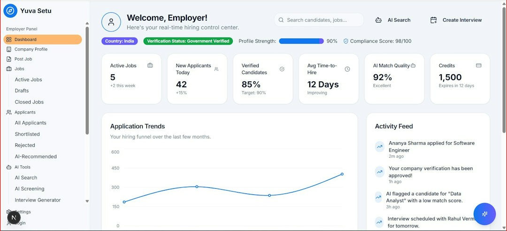

Ridurre Sprechi di Tempo e Costi nella Gestione Digitale: Come NexusAI Trasforma Imprese, E-Commerce e Strutture Ricettive

Ottimizzazione Operativa e Riduzione Costi con NexusAI per Imprese, E-Commerce, Strutture Ricettive e Agenzie Web
- Il problema dei lead persi e dei visitatori inattivi costa tempo e denaro alle aziende digitali.
- Analisi dettagliata degli effetti negativi sull'efficienza e la gestione quotidiana.
- NexusAI offre una soluzione AI innovativa senza modifiche al sito per aumentare contatti e prenotazioni 24/7.
Analisi approfondita della notizia e delle implicazioni operative
Nel contesto attuale altamente competitivo, imprese, e-commerce, strutture ricettive e agenzie web si trovano ad affrontare una sfida cruciale: la gestione inefficiente dei visitatori online. Spesso, i contatti interessati abbandonano i siti web senza interazioni, oppure i lead potenziali si perdono durante le ore notturne, quando non è presente un supporto attivo. Questa situazione rappresenta uno spreco consistente di tempo, risorse e opportunità di vendita. In un mondo in cui la rapidità di risposta e l’esperienza utente sono fattori determinanti per il successo, restare ancorati a metodi tradizionali di gestione porta inevitabilmente a inefficienze operative e costi elevati.
Allo stesso tempo, molte aziende lamentano la difficoltà di aggiornare continuamente i propri sistemi digitali o di implementare soluzioni che richiedano interventi tecnici importanti, che rallentano l’attività e generano ulteriori costi. Inefficacia nella comunicazione e perdita di lead si traducono in perdita diretta di fatturato e in una maggiore complessità gestionale.
Le conseguenze e i costi di non agire
Non affrontare il problema dei visitatori che lasciano il sito senza interagire e dei lead persi nelle ore notturne comporta una serie di conseguenze gravi che si riverberano sull’intero ecosistema aziendale. Prima di tutto, la mancanza di interazione significa che molte opportunità di contatto e vendita non vengono sfruttate, creando un gap di conversione difficile da colmare in futuro. I visitatori che non trovano supporto o informazioni rapide si rivolgeranno invece alla concorrenza, erodendo la quota di mercato.
Inoltre, l’assenza di continuità nella gestione dei lead, soprattutto fuori orario di ufficio, incrementa i costi di marketing e acquisizione poiché le campagne portano visitatori ma non garantiscono interazione o conversione. La gestione manuale o frammentata dei contatti allunga i tempi di risposta, aumentando il carico di lavoro del personale senza offrire risultati proporzionati.
Da un punto di vista economico, questi sprechi si traducono in un peggioramento del ROI, maggiori investimenti in risorse umane e tecnologiche, e infine, in una riduzione della competitività aziendale. Ogni minuto perso a causa di inefficienze si accumula, impattando negativamente sulla redditività e sulla capacità dell’azienda di innovare e crescere.
Come NexusAI risolve il problema
NexusAI, la soluzione SaaS sviluppata da RM Studio, rappresenta un cambio di paradigma nella gestione digitale di lead e interazioni web. Grazie alla tecnologia proprietaria Shadow-Proxy AI Sales Overlay, NexusAI si integra senza necessità di modifiche al codice del sito esistente, posizionando un assistente virtuale intelligente direttamente sulle pagine del cliente. Questo assistente interagisce con i visitatori 24 ore su 24, raccogliendo contatti, prenotazioni e gestendo richieste in tempo reale.
Questa modalità elimina drasticamente il problema dei lead persi nelle ore notturne e massimizza le opportunità di engagement. I visitatori non vengono più lasciati soli o costretti a cercare informazioni in modo dispersivo, ma trovano un interlocutore proattivo e sempre disponibile, che migliora l'esperienza utente e aumenta il tasso di conversione.
Inoltre, NexusAI consente una riduzione significativa dei costi di gestione, poiché non serve personale aggiuntivo per la copertura fuori orario o per la gestione manuale dei contatti. La piattaforma è offerta in piani accessibili da €49/mese (Base) fino a €99/mese (Pro con gestione prenotazioni), rendendo la soluzione conveniente anche per realtà con budget limitati ma alte aspettative di performance.
| Aspetto | Gestione Tradizionale | Con NexusAI |
|---|---|---|
| Interazione con visitatori fuori orario | Assente o molto limitata | Assistenza 24/7 automatizzata |
| Modifiche al sito necessarie | Spesso necessarie e complesse | Nessuna modifica al codice richiesta |
| Costo medio mensile | Alto, con risorse umane e tecnologie multiple | Da €49 a €99, prezzo fisso e trasparente |
| Raccolta di contatti e prenotazioni | Manuale e spesso frammentata | Automatica e integrata con AI |
💡 Ti è stato utile questo approfondimento?
Condividilo con un collega o un amico del settore Imprese, E-Commerce, Strutture Ricettive e Agenzie Web a cui potrebbe interessare!
FAQ - Domande Frequenti per Professionisti
1. NexusAI richiede modifiche al mio sito web attuale?
NexusAI utilizza la tecnologia Shadow-Proxy AI Sales Overlay che non necessita di alcuna modifica al codice esistente sui siti, semplificando l’implementazione.
2. È possibile personalizzare l’assistente virtuale in base alle mie esigenze di business?
Sì, NexusAI offre configurazioni personalizzabili per adattarsi ai diversi settori e tipologie di interazione desiderate, dal semplice contatto alle prenotazioni complesse.
3. Come posso monitorare i risultati e i contatti raccolti dall’assistente?
Attraverso una dashboard integrata, NexusAI fornisce report dettagliati sulle interazioni, lead generati e prenotazioni, per ottimizzare le attività di marketing e vendita.
Inizia Subito
Piani da €49/mese (Base) a €99/mese (Pro con prenotazioni).
Fonti Ufficiali e Risorse Esterne
Scopri l'Intelligenza Artificiale per la tua attività
Ottimizza i processi e aumenta le vendite con le soluzioni B2B di RM Studio.
Scopri NexusAI